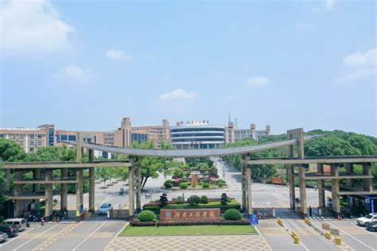

湖南工程学院简介 湖南工程学院坐落于湖南省湘潭市，是一所以工为主，工、管、文、理、经、艺多学科协调发展的全日制普通本科院校。学校始建于1951年，前身为湘潭机电高等专科学校，2000年与湖南纺织高等专科学校合并组建为湖南工程学院。 学校现有主校区和南校区两个校区，占地面积约1800亩，校园环境优美，湖光山色相映成趣。学校设有16个教学院（部），开设56个本科专业，涵盖工学、管理学、文学、理学、经济学、艺术学等学科门类。其中，电气工程及其自动化、机械设计制造及其自动化、纺织工程等专业为省级特色专业，在省内外享有较高声誉。 湖南工程学院坚持"应用型、地方性、开放式"的办学定位，注重培养学生的实践能力和创新精神。学校拥有完善的实验实训设施，包括1个国家级大学生校外实践教育基地、8个省级实践教学平台。近年来，学生在各类学科竞赛中屡获佳绩，毕业生就业率保持在95%以上，深受用人单位好评。 学校积极开展国际交流与合作，与德国、英国、韩国等多所高校建立了合作关系，开展师生交流、合作科研等项目。同时，学校立足湖南，服务地方经济发展，与多家知名企业建立了产学研合作关系。 经过70余年的发展，湖南工程学院已发展成为湖南省重要的应用型人才培养基地，正朝着建设特色鲜明的高水平应用型大学的目标稳步迈进。
